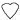
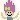
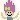
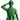

| 2012/09 30 Sun | 名古屋であっくっしゅーあっしゅっしゅー(´>∀<｀)ゝ |
こんにちはるるるるん
よっとこさ
昨日は名古屋で個別でしたー(`･ω･´)
ほんっとに、来てくれた皆さん
感謝してます感謝してます(*´˘`*)♡
来れなかった皆さんのぱわーも
コメントからいただきましたー‼♡
どうもどうもありがとうございます

いやー、ね⁇
こんなちはるでも応援してるよ‼
ちゃんとみてるよ‼
って言ってくださってる方がいるなんて感動です(´;ω;`)(´;ω;`)
その方々の為にも、
もっともっと自分自身変わっていかんとね‼‼(p`･ω･´q)
頑張っていかんとね‼‼(p`･ω･´q)
もっとたーっくさんの方にも知ってもらって、
握手しに会いにきてもらえるように
頑張る頑張るよ

みんなに負けてられん(p`･ω･´q)‼
お、負けず嫌い発揮
とゆことなので、
あと２回だよーBicycle握手会(> <)
残り少ないからさ、余計待ってるよ‼
東京全握、横浜個握

いっきなりばーん
全身写真with個別私服
どーですかい⁇
大人っぽく、秋のトレンドカラー黒で全身まとめてみちゃったよ(`･ω･´)

ねこちゃん柄ワンピはINGNIで‼
もこもこベレー帽はレトロガールで‼
どーですかい⁇
あれっ
ちょっとまって！
髪巻いてるやん！
そーなんすそーなんす
くるくるっとちょちょいと巻いてみました(`･ω･´)♡♡♡
いつぶりだろー
巻いたのー
わー
ってメイクさんちーむともなりました(｡•ω-｡)てへ
お久しぶりです
Q&Aだぜぃっコーナーいえーい
ディズニーのことを返しちゃったりしてみる‼
 トイストーリーで好きなキャラクターは？
Mr.ポテトヘッドとかアレックスとか好き‼
トイストーリーで好きなキャラクターは？
Mr.ポテトヘッドとかアレックスとか好き‼
 

性格がすき‼

とかいいつつウッディの仲間思いさには泣ける( ；∀；)
つまりはさー、みんな好きよ‼
とかいいつつトイストーリー乗ってない(´;ω;`)

私も、今度ディズニーシー行くんですけどオオスメのアトラクションってありますか？
絶叫系が大好きだから
インディージョーンズとか
レイジングスピリッツとか
センターオブジアースとか
タワーオブテラーとか
そのへんオススメだよ(´｡･ω･｡`)
ん、全部やん絶叫。
絶叫系むりならゆったりできる
シンドバッドが好きー

歌が頭から離れません。どうしましょ。笑
写真はジャスミンのフライングカーペットですか？(笑)
あ、ばれました⁇
そうです、それですー
そしてチームNポーズが気になる
自分から見て右手でピースつくって
左手でいちつくってくっつけて
自分から見てＮになってればそれでよし(`･ω･´)
さあ、これがちまたで噂のちーむNポーズだ‼(`･ω･´)
向こう側から見られることは気にしない‼(`･ω･´)
それがちーむNポーズなんだ‼(`･ω･´)
はーい
しゅーうりょーうでーす
みんなもちーむNポーズつくってみてね(｡•ω-｡)
逆に質問ヽ(^0^)ﾉ
ディズニーで好きなアトラクションはー⁇
とゆことで
ちはるが茶髪にしたらギャルっぽくなる‼
んね⁇んね⁇
それがわかったかしらね⁇
でも憧れてしまうよねー
展開早いねー切り替え大切ねー
とゆことで今日もみんなで頑張ってきますヽ(•̀ω•́ )ゝ✧
どんな努力が実るのかなー⁇
ばいるんっ
るんるんっ
ちはるんっ
(´>∀<｀)ゝ
コメント(81)
2012/09/30 11:24